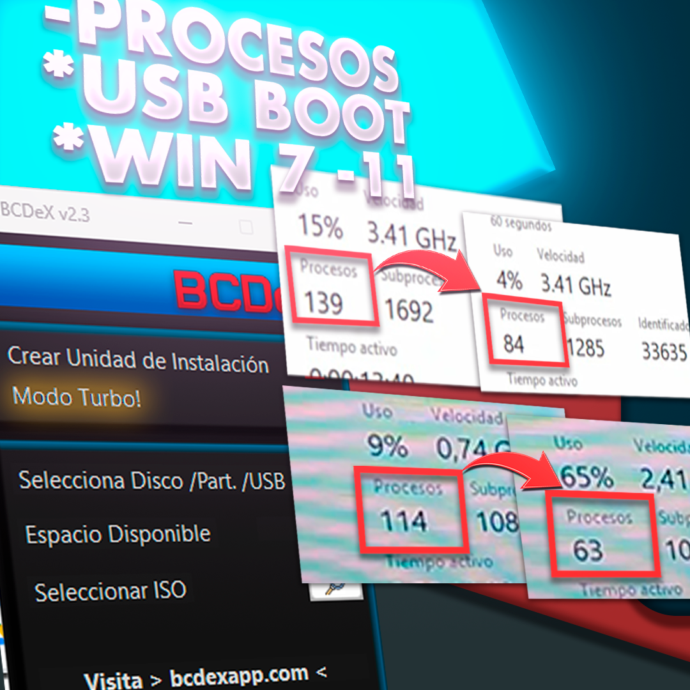

🚀 BCDeX 2.3: Modo Turbo – Qué desactiva y cómo volver a activarlo
El Modo Turbo de BCDeX 2.3 es como un botón mágico: apaga lo que Windows trae de serie pero casi nunca usas. Así tu PC respira y va más rápido. ¿Que luego echas de menos algo (imprimir, VPN, escáner)? No pasa nada, aquí mismo te dejo cómo encenderlo otra vez en segundos.

⚡ ¿Qué hace exactamente el Modo Turbo?
Esta optimización se centra en liberar la máxima cantidad de recursos sin comprometer la estabilidad básica del sistema.
- Crea un Punto de Restauración antes de tocar nada (seguridad ante todo).
- Apaga servicios poco usados (impresión, mapas, Xbox, sensores...).
- Pone en manual cosas de red y actualización para que no estén chupando recursos todo el rato.
- Recorta telemetría y tareas programadas de "experiencia de usuario".
- Activa el plan de energía de Máximo rendimiento y quita la hibernación.
- Ajusta privacidad: adiós a Recall, Copilot y demás funciones que envían datos.
🔧 ¿Se apagó algo que sí necesitas?
Ejemplo rápido: si tu impresora no responde porque el servicio Spooler está apagado. Solución: abre PowerShell como administrador y pega el comando de activación.
📋 Lista de servicios básicos que el Modo Turbo toca
| Servicio | Función (Apagado por defecto) | Comando de Reactivación |
|---|---|---|
| Spooler (Impresoras) | Gestiona las colas de impresión y los trabajos. |
Set-Service Spooler -StartupType Automatic; Start-Service Spooler
|
| PrintNotify | Muestra notificaciones y complementos al imprimir. |
Set-Service PrintNotify -StartupType Automatic; Start-Service PrintNotify
|
| StiSvc (Escáner/Cámara) | Detecta y comunica dispositivos de imagen como escáneres. |
Set-Service StiSvc -StartupType Automatic; Start-Service StiSvc
|
| RasMan / RasAuto (VPN y PPPoE) | Gestionan conexiones VPN y de acceso telefónico/PPPoE. |
Set-Service RasMan -StartupType Automatic; Start-Service RasMan
|
| icssvc (Zona Wi-Fi Hotspot) | Permite crear un hotspot y compartir internet con otros equipos. |
Set-Service icssvc -StartupType Automatic; Start-Service icssvc
|
| WebClient (WebDAV) | Permite abrir carpetas y archivos en servidores WebDAV. |
Set-Service WebClient -StartupType Automatic; Start-Service WebClient
|
| SysMain (Superfetch) | Precarga aplicaciones en RAM (puede saturar discos HDD). |
Set-Service SysMain -StartupType Automatic; Start-Service SysMain
|
| WbioSrvc (Biometría) | Inicio de sesión con huella dactilar o reconocimiento facial. |
Set-Service WbioSrvc -StartupType Automatic; Start-Service WbioSrvc
|
| WMPNetworkSvc | Comparte multimedia en red con otros dispositivos DLNA. |
Set-Service WMPNetworkSvc -StartupType Automatic; Start-Service WMPNetworkSvc
|
| WinRM | Administración remota de Windows (entornos empresariales). |
Set-Service WinRM -StartupType Automatic; Start-Service WinRM
|
📋 Otros servicios que podrías ver apagados
No todos aparecen en todas las versiones de Windows. Si los necesitas, reactívalos pegando el comando en PowerShell (Admin):
| Servicio | Para qué sirve | Comando PowerShell |
|---|---|---|
| AJRouter | Enrutador AllJoyn para dispositivos IoT. | Set-Service AJRouter -StartupType Automatic; Start-Service AJRouter |
| ALG | Compatibilidad NAT para programas antiguos. | Set-Service ALG -StartupType Automatic; Start-Service ALG |
| IKEEXT | Módulos de clave IKE e IPsec para túneles VPN. | Set-Service IKEEXT -StartupType Automatic; Start-Service IKEEXT |
| iphlpsvc | Tecnologías de transición IPv6 (Teredo/ISATAP). | Set-Service iphlpsvc -StartupType Automatic; Start-Service iphlpsvc |
| lltdsvc | Descubrimiento de topología en red local. | Set-Service lltdsvc -StartupType Automatic; Start-Service lltdsvc |
| VaultSvc | Almacén de credenciales y claves del sistema. | Set-Service VaultSvc -StartupType Automatic; Start-Service VaultSvc |
| wscsvc | Centro de seguridad de Windows y alertas. | Set-Service wscsvc -StartupType Automatic; Start-Service wscsvc |
| CertPropSvc | Propagación de certificados en tarjetas inteligentes. | Set-Service CertPropSvc -StartupType Automatic; Start-Service CertPropSvc |
| DeviceAssociationService | Emparejamiento de periféricos cableados e inalámbricos. | Set-Service DeviceAssociationService -StartupType Automatic; Start-Service DeviceAssociationService |
| DmEnrollmentSvc | Inscripción en administración de dispositivos (MDM). | Set-Service DmEnrollmentSvc -StartupType Automatic; Start-Service DmEnrollmentSvc |
| dmwappushservice | Enrutamiento de mensajes WAP Push y telemetría. | Set-Service dmwappushservice -StartupType Automatic; Start-Service dmwappushservice |
| fhsvc | Historial de archivos y copias de seguridad. | Set-Service fhsvc -StartupType Automatic; Start-Service fhsvc |
| Netlogon | Autenticación en dominios de red de Windows. | Set-Service Netlogon -StartupType Automatic; Start-Service Netlogon |
| netprofm | Identificación de perfiles y categorías de red. | Set-Service netprofm -StartupType Automatic; Start-Service netprofm |
| RemoteAccess | Enrutamiento y servicio de acceso remoto. | Set-Service RemoteAccess -StartupType Automatic; Start-Service RemoteAccess |
| SensrSvc | Monitoreo de sensores de brillo y acelerómetro. | Set-Service SensorService -StartupType Automatic; Start-Service SensorService |
| WdiServiceHost | Diagnósticos automáticos del sistema. | Set-Service WdiServiceHost -StartupType Automatic; Start-Service WdiServiceHost |
| WinHttpAutoProxySvc | Detección de proxies web con WPAD. | Set-Service WinHttpAutoProxySvc -StartupType Automatic; Start-Service WinHttpAutoProxySvc |
| wlidsvc | Identidad para cuentas Microsoft en apps. | Set-Service wlidsvc -StartupType Automatic; Start-Service wlidsvc |
| WPDBusEnum | Gestión de dispositivos de almacenamiento portátil (MTP). | Set-Service WPDBusEnum -StartupType Automatic; Start-Service WPDBusEnum |
| WerSvc | Informes y telemetría de errores a Microsoft. | Set-Service WerSvc -StartupType Automatic; Start-Service WerSvc |
| RemoteRegistry | Edición remota del registro de Windows. | Set-Service RemoteRegistry -StartupType Automatic; Start-Service RemoteRegistry |
| wudfsvc | Controladores en modo de usuario (WUDF). | Set-Service wudfsvc -StartupType Automatic; Start-Service wudfsvc |
| XboxNetApiSvc | Servicios de red y multijugador de Xbox. | Set-Service XboxNetApiSvc -StartupType Automatic; Start-Service XboxNetApiSvc |
| MapsBroker | Gestor de mapas descargados sin conexión. | Set-Service MapsBroker -StartupType Automatic; Start-Service MapsBroker |
🕒 Servicios en "pausa" (Manual): arrancan solos si los necesitas
Estos servicios se ponen en modo "Manual", lo que significa que Windows los inicia automáticamente solo cuando una aplicación o función los requiere, ahorrando recursos en el arranque. Si prefieres que siempre estén listos, puedes forzar el modo Automático:
| Servicio | Función principal | Forzar Automático |
|---|---|---|
| BITS | Descargas en segundo plano (Windows Update, Defender). |
Set-Service BITS -StartupType Automatic; Start-Service BITS
|
| UsoSvc | Orquestador de actualizaciones del sistema. |
Set-Service UsoSvc -StartupType Automatic; Start-Service UsoSvc
|
| wuauserv | Servicio principal de Windows Update. |
Set-Service wuauserv -StartupType Automatic; Start-Service wuauserv
|
| DoSvc | Optimización de entrega (compartir descargas en red). |
Set-Service DoSvc -StartupType Automatic; Start-Service DoSvc
|
🗑️ Desinstalación de aplicaciones y componentes
El Modo Turbo también elimina aplicaciones preinstaladas y componentes que considera "bloatware" para aligerar el sistema. Aquí te explicamos qué quita y cómo recuperarlo:
Apps (El Tiempo, Microsoft 365, Teams, To-Do)
Función: Son aplicaciones de Microsoft que vienen con Windows. Se eliminan para limpiar el menú de inicio y liberar espacio.
Reactivar: Puedes reinstalarlas gratis cuando quieras desde la Microsoft Store.
Microsoft Edge y Bloqueo de Reinstalación
Función: Edge se quita por si prefieres usar otro navegador y no quieres tenerlo consumiendo recursos en segundo plano.
Reactivar Edge: Descarga el instalador desde la página oficial de Microsoft Edge.
Desbloqueo en Registro: El Modo Turbo añade una clave en el Registro para evitar que Windows Update reinstale Edge automáticamente. Para desbloquearlo ejecuta en PowerShell (Admin):
Remove-Item -Path 'HKLM:\SOFTWARE\Microsoft\EdgeUpdate' -Name 'DoNotUpdateToEdgeWithChromium' -Force
🚨 ¡Importante: Variabilidad en Windows!
No todos los servicios existen en todas las versiones de Windows. Windows 7, 8.1, 10 y 11 no traen exactamente lo mismo. Si pruebas un comando y te sale un error diciendo que el servicio no existe, simplemente no está presente en tu edición. Consejo: reactiva solo lo que de verdad necesites.
✨ ¿Listo para probar BCDeX?
Descubre la forma más rápida y limpia de instalar Windows. Visita nuestras secciones para más información: